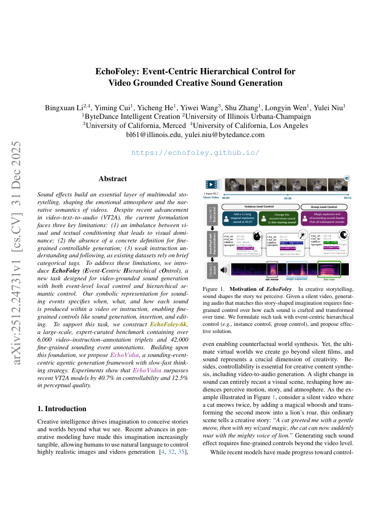
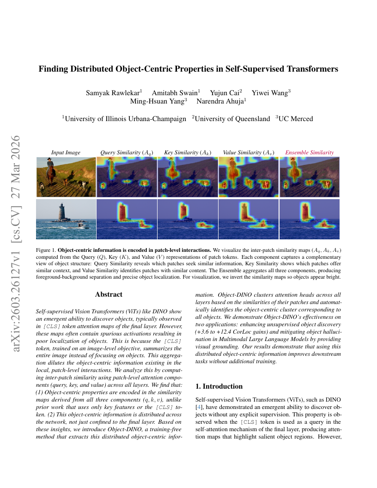
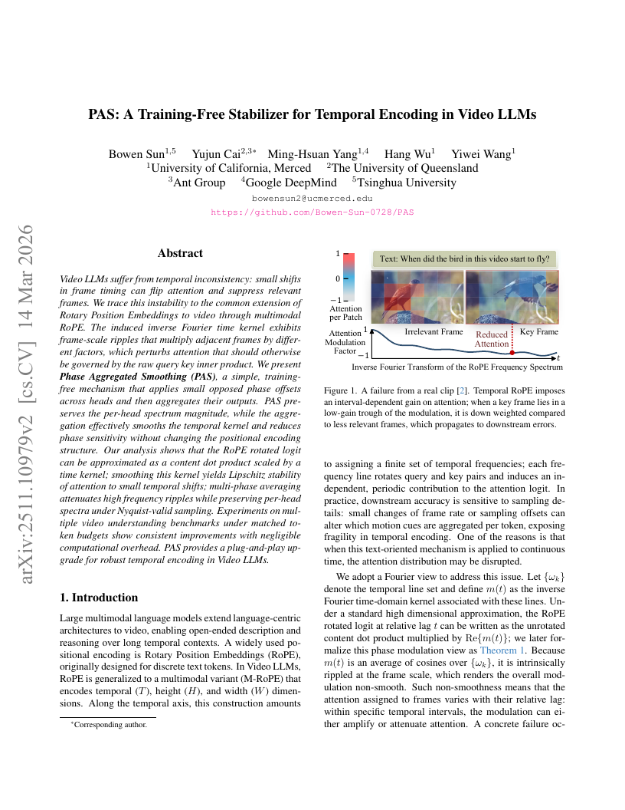
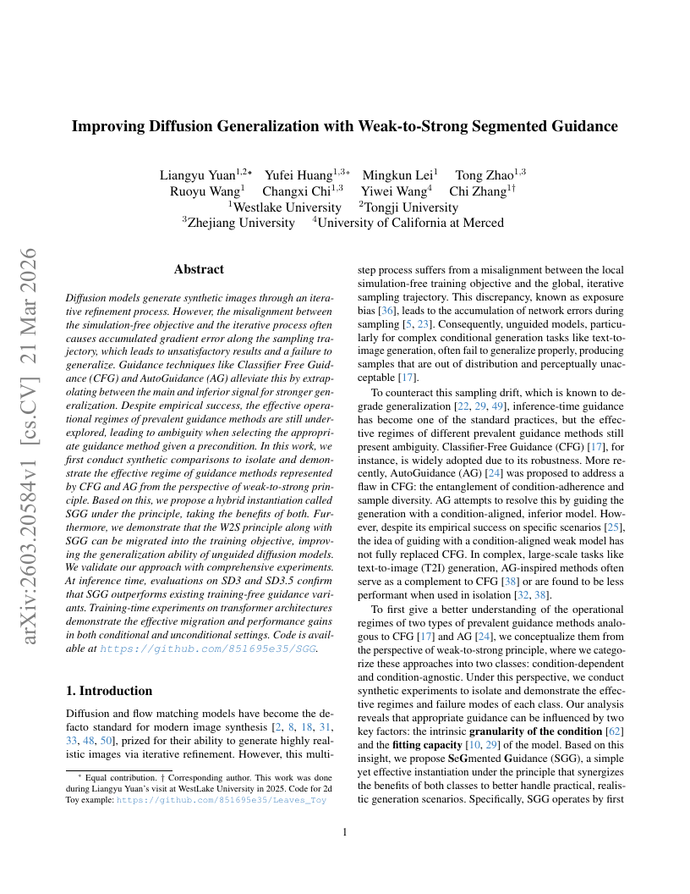

Paper 01
EchoFoley: Event-Centric Hierarchical Control for Video Grounded Creative Sound Generation Audio-visual generation | Creative Foley | Event control
Yiwei Wang's Work at CVPR 2026
Multimodal reasoning, video LLMs, diffusion generalization, object-centric representation, and creative sound generation.
EchoFoley: Event-Centric Hierarchical Control for Video Grounded Creative Sound Generation Audio-visual generation | Creative Foley | Event control
Finding Distributed Object-Centric Properties in Self-Supervised Transformers Self-supervised ViTs | Object discovery | Representation analysis
PAS: A Training-Free Stabilizer for Temporal Encoding in Video LLMs Video LLMs | Temporal encoding | Training-free stabilizer
Improving Diffusion Generalization with Weak-to-Strong Segmented Guidance Diffusion models | Generalization | Segmented guidance
From Perception to Simulation: The Emergence of World Models in Multi-modal Reasoning World models | Multi-modal reasoning | Perception to simulation




From Perception to Simulation: The Emergence of World Models in Multi-modal Reasoning